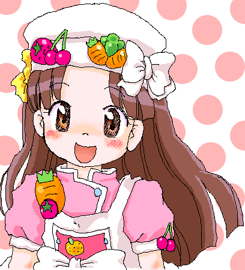

▼
サイト全体をCSS(スタイルシート)化してみました～ｖ
どうでしょう、まだリンク先が改装中なページもありますが
メニューに画像を入れたり、多すぎるテキストを整理したり、
加えて左にバナーやお見せしたい画像を張り込んで楽しいページにと、
元の雰囲気は壊さずに、頑張ってみたつもりですー。
IE6とIE8で動作確認をして、IE6でもほぼ問題なく
表示されているのではないかと思います。
IE6では表示されませんが、上の■どれみ公式■と■ファンサイト■の
テキストにカーソルをあてると詳細リンク先が下に出てくるという
ややもしたらうざったいかもしれないCSS技術を使ってみたりしたので
ちょっと触ってみてくださいねｖ
学校でまだ習ってる途中の事も組み込みつつ、
今年中をメドにFireFoxやOperaでも動作チェックをして
とりあえずの改装完了をしようと思いますｖ
新年からは、まだずっといじってないモバイルページも
最近のケータイに合わせた、格好良く軽い
そんなのにしたいなぁ、と。
そんな、ちょっと調子づいてるけど
十分現実的な計画、頑張ってゆきたいです。
（更新日 09年12月13日SUN.）
▲
▼
もう２ヶ月近く前の写真ですが、学校の２階食堂に移りこんだ秋のうろこ雲がめっちゃ綺麗だったので
せっかく新しくしたケータイのパワー(笑)で風景を切り抜いてきました～ｖ
もうすっかり寒くなって、晴れの日は朝と夜が寒い、曇り雨風の日は日中寒いと
このころの心地よかった気候がもうすでに懐かしいですねぇ…
学校もあと１週間ちょっとで冬休み…
厳しい寒さは深まっていきますが、もうあと少し、頑張ってゆきたいです。
09年10月に撮った写真
（更新日 09年12月13日SUN.）
▲
▼
大阪オフ(詳細は同日日記にて)飲み屋で描いたマジカルキャラクターブックの
初見、描き下ろし？のイラストがどの子もめっちゃ可愛かったので
代表してはづきさんをほぼ模写でｖ
うーん、マジキャラブック欲しいけど、個人取引はこわいﾅｧ…と
まぁ毎回オフで誰かがもってきてくれるだろうからそのとき拝めばいいかな
消しゴムをかけるとかすれる絵葉書だったので線がかすれかすれー
でもまぁオフ会の思い出ですｖ
09年8月に描いた絵
（更新日 09年8月13日THU.）
▲
▼

NHK教育で月～金PM5:40から放送中のアイ！マイ！まいん！
主人公のまいんちゃん(二次元のほう^^;)絵チャ描きです～ｖ
パソコンのモニタがワイドになったので、
タブレットの描画領域も16:9に合わせたのですが
なんか斜めの線とか引きにくく、
「これは慣れなのかな？それとも比率とか間違えたかしら…」と。
前番組の味楽る！ミミカの方が好きだったのに
先に絵を描いたのはまいんちゃんという…(^^;
仕上がりがどうしてもラフな感じになっちゃうので苦手だったタカミン絵チャ、
拡大機能がついてけっこう綺麗に仕上げられるようになったので
これからもりもり参加してゆきたいですｖ
09年7月に描いた絵
（更新日 09年7月29日WED.）
▲
▼

るるな色々絵塗りUPの前に今日タブレットドライバをインストールして
描画範囲設定とかして絵チャで描いたるるな絵を１枚ｖ
右上はモモさんのいつものモモ！ 右にちょっとだけ見える手と髪は
傍観者さんの超美麗な市川小雪たん！(むかしのはづきちゃんのばあや)
絵チャの拡大機能を使ってみたんですが、けっこう自分の思い通りに描けて
自己満足度なかなか。今後のど祭りのTOP絵とかも参加出来そうで
ちょっと前向き気分ｖ
新パソコン移行の為、長いことるるな絵塗り＆WEB更新できない状況が続きましたが
ようやく色々前のパソコンの状況に合わせられたというか
地デジ録画生活も始められて、ちょっとおニューな生活はじまりましたｖ
今日はずっとスカイプの音声通話でだべりながら色々設定して夜更かしさん。
なんか心やすらぐ一晩でしたｖ こんな気持ちが続いたらいいなぁ・・・
09年7月に描いた絵
（更新日 09年7月25日SAT.）
▲
▼

るるな色々絵ｖ
←は町の中でのおでかけ私服？ルック。
←クリックで展開で左下、るるな＆にむにむの
世界では魔法を使うのに"シンボル"の補助を
得ることが多く、この場合のシンボルは指輪です。
一番手軽でメジャー。他首飾りとかもあります。
で、左上と真ん中はるるなは腕力があまり無い
ながら重い剣を使うので、主に身のこなしによる
遠心力を使って剣を振るいます。
右上はあこがれの剣を買うためや生計を立てる
ための狩り姿。
魔法の勉強は苦手ですが色々器用なのですｖ
夜は酒場の看板娘としても働いて、真面目に
道具屋(仮)でアルバイトするにむにむより稼ぎが
多いというｖ けど無駄遣いも多いからどっこいｖ
あとやっぱりぱんつ見えても気にしない子ｖ
09年7月に描いた絵
（更新日 09年7月9日THU.）
▲
▼

一枚TOP向け季節絵のラフが出来たのですが、まだそっちに手がまわらない
＆描けるまでいつまでも冬絵じゃ可哀想ということで
05年度自己紹介コピー本表紙のパトレーヌはづきっちｖ
大きな絵左寄せもたまにはいいかな、とｖ
…今度のぷにケにはサークル参加しようと思っております～
ハナちゃんのごにょごにょな本をたずさえて！
データ残ってるのでこの本も少し再販しようと思います(内容ラフですが；
ぷにケ向けの原稿なのでUPはしませんが
最近お絵かきが結構はかどってます。
このペースでいけば無理なくぷにケに本が出せるかな、と。
今年度から行き始めた学校の勉強もだんだん面白くなってきたし、
油断せずがんばっていきたいと思いますｖ
05年12月に描いた絵
（更新日 09年6月2日TUE.）
▲
▼

5/5どれみイベント美空小同窓会、「こんじゃぱ×だんじとうじきょう」さんで
11部販売した突発本(18禁ｗ)の本文最後のページを担当させてもらった、
大ハナちゃんの少し未来の憧憬１ページ漫画。クリックで展開。
本文１ページ目とのギャップがすごいと評判ですｖ
買っていただいた方！ありがとうございましたー！
あと宣伝ｖ 5/31ぷにケット19、マオ26「土曜ど祭り同盟」にて販売される(予定)の
どどど本リターンズにて１P寄稿させてもらってますｖ
描き下ろし見習い服ハナちゃん中心のページを頑張りました。
いらっしゃる方は是非お立ち寄りをｖ
う～んマイブームイズハナちゃんっちｖ
09年5月に描いた絵
（更新日 09年5月7日THU.）
▲
▼
ラグナロクオンライン、なんだかんだでジョブ50Lv転職でナイトになりました。
ソードマン(剣士)も気に入ってましたが、
お座り騎士子さんかわいいいいいいいいい！！！！
…まぁ普段は機動力の為にペコペコに騎乗するので見られませんがｖ
それはそうとこれに至るまでの思いで話など。
海底洞窟B１Fで出会った
アーチャーの牡丹雪さんと私(剣士時代)のツーショットｖ

ホントにたまたまB１Fで座って休憩してたというだけで
話しかけて知り合いましたｖ 今ではとっても仲良しさんｖ

そして牡丹雪さんは早期転職でハンターになり(鷹に注目！アルキバという名前ｖ)
同時に海底洞窟で知り合ったろろさん(真ん中)との仲良し図。私はマーチャント(商人)キャラｖ
ジョブ40Lvで転職出来るんですが、ろろさんは頑張って50Lv転職を目指すみたい～

そしてログインしなくなってしまった方の意思を受け継いで
新ギルド結成ｖ(左下参照)
ろろさんは既に別のギルドに入ってて
牡丹雪さんはまだ孤高に独り身がいいみたいでウチのfeatβには入らず…
うんうん、自由でいいよねｖ
元ギルドマスターさん！いつでも帰って来てね！待ってるよーｖ
そして今のギルドマスターの方にオススメ装備とか教えてもらいつつ、ソロ(一人プレイ)で
騎士子さん楽しくレベル上げちうｖ そのあたりのことは次のRO更新にて～
あー、お絵描きもしなくっちゃだけど楽しい！
もうそろそろ無料鯖はまた終わってしまいますが
また次の無料鯖開始の機会にでもまたここでお知らせしますので
最初からペアでプレイとか、興味の沸いた方は是非メールくださいｖ
あっはっは、自分ネトゲ廃人(まだそれほどでもない)乙！
09年2月に写した画像
（更新日 09年2月15日SUN.）
▲
▼

らき☆すた日下部みさお絵チャ描き～ｖ
ほぼ原作漫画５巻の表紙絵の左右反転ですが；
この時はぷにケ合わせでみさお本作りたいなーって思ってたけど
戦艦大和煮センセに諭されて
背景以外の線画の出来上がってるはづきちゃん本を出したいと路線変更。
絵に書いてあるとおりROしながらじゃ無理って感じですが；
今日無料サーバがまた始まってふたば二次元裏のメンバー８人プレイも
始めちゃったし； 明日の夕方からまた集まる予定；
それに加えて夜は仲良しになった二人と一番楽しい３人狩り、
最初から初めて見逃してた要素を見てくる新キャラプレイ朝方、
・・・１日中RO三昧なのだわ；
多分ふたばのメンバーは段々集まり悪くなってくると思うので
夕方あたりはお絵描きの時間にあてられるようにしたいです；
…ともかくみさお！ラブリーみさお！
近くのimaginに売ってるうちに背景コンビCDも買おうかしらｗ
いやぁ、最近現実逃避気味ながら充実してるなぁ…
ずっとこんな気持ちが続くといいのだわ
09年1月に描いた絵
（更新日 09年1月27日TUE.）
▲
▼
折角時間泥棒と名高いネトゲをやってる事だし、
思い出として残すためにRO(ラグナロクオンライン)絵日記、
はじめたいと思いますｖ
…やってない人でも少しでも興味を持って貰えれば嬉しいな、と思うので
分からない単語は使わないようにします～。
無料サーバ期間から始まった様々な人との出会いを軸に
現在海底洞窟B4Fに知り合った人と一緒に探検に行ったり、
アンデットの巣食う地下洞窟これもB4Fまで行ったりで
ソロ経験値＆お金稼ぎ～。
で、現在こんなステータス。
素早さ(AGI)をメインに上げて高速回避＆切りなナイトを目指す
ソードマン(剣士)ですｖ
…40Lvでもう転職は出来るんですが、ソードマンのグラフィックが
可愛いのと、一応スキル取れるだけ取ろうという、
将来性を見すえたスキル＆ステ振り～
最近出会ったアーチャーさんが私よりレベルが下で
だけど私みたいな前衛がいて対応した属性矢があれば、
かなりの攻撃力を発揮する方と一緒にペア狩りしたりしてますｖ

そしてこちらは２キャラ目で育ててるマーチャント(商人)。
主に露店(自由な価格でどこでも持ち物を販売出来る)売り＆
売り買い各24%UP&OFF！で、他キャラと倉庫(所持限界の重さがあるため
使わない物は預けるところ)が共有なので
剣士で拾った物をオーバーチャージ(24%増し売りスキル)で売り！
回復剤(今は主に剣士はあまり物を持てないので"おいしい魚(軽くて回復量が
高い・結構高価)"商人はカートという荷物入れを装着出来るので重いけど安くて
回復量の高い"にく")を24%割引で買い！という
自給自足プレイをしていますｖ
ベースレベルというのが56以上になると
アカデミーという２次職(剣士からナイトになる等、
この場合は商人→ブラックスミスorアルケミスト)に
なるまでのバックアップしてくれる施設が利用出来なくなるので
露店のスキルをもうちょい伸ばしてキリ、としようと思ってますｖ
（ベースレベルというのがステータスを上げるLv、
ジョブレベルというがその職のスキルを上げるLvですｖ）
どうかこれを見て興味の沸いた方、明日(1/27)から無料サーバー始まるので
一緒にプレイしてみませんか？ｗ
キャラがすっごい可愛いし、世界の広がりも楽しいので良いですよ～ｖ
09年1月に写した画像
（更新日 09年1月26日MON.）
▲
▼

さて、ネリヒバリさんから色紙のデジカメ撮影がとどいたのでUP！
…某絵チャットでははづあきと名乗ってるえむけいです。
ホント、０８年はいろいろな事がありました～。今年もよろしくですｖ
09年01月に描いた絵
（更新日 09年1月12日MON.）
▲
▼
あけましておめでとうございます！
今RO(ラグナロクオンライン)に浮気ちうなのでまだ絵の更新は
大阪オフで描いたはづき絵スキャン待ちのみ！
で、本格的な更新はRO無料期間が終わる1/6日以降に！
それではまた会いしましょう～！
（更新日 09年1月4日SUN.）
▲
もどる《


{kind=link}
{kind=link}